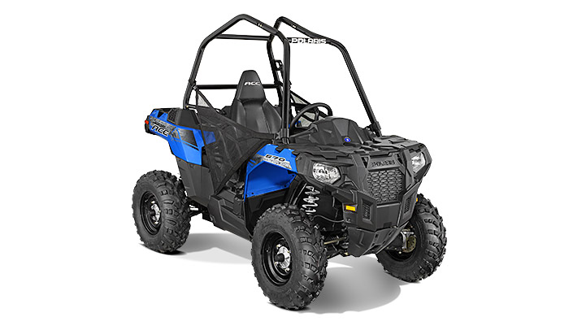

-
 RZR® S 900 EPS
RZR® S 900 EPSEl RZR® S 900 EPS es una de las mas avanzadas piezas de tecnología. Su chasis de adamantio reforzado con espirifitis de plomo y su gran cañon de fideos tirabuzon, lo hacen ideal para repartir pizzas en los barrios mas
-
 RANGER® DIESEL HST
RANGER® DIESEL HSTEl RANGER® DIESEL HST es, probablemente, uno de los mas útiles vehiculos del mundo. Deslizador, aeronave, todoterreno, submarino, armario, sandmaster, helicopeto apache, bordeadora.. nada es imposible para el RANGER® DIESEL HST
RANGER® 570Su sistema de resortecitos de última generación permite al conductor mas amateur del mundo alcanzar el nivel de profesionalismo de Michael Schumacher. Gracias a sus ventanillas totalmente opacas y sus lentes 3d con surround
-
 Sportsman® 570
Sportsman® 570Con el Sportsman® 570 va a ser imposible que vuelques. Posee dos tornepente resorticos que impiden a que el oxido carcómico se devore su sistema de suspensión espacial. En varios colores se lo puede comprar en 12 cuotas sin
 Sportsman® 570 SP
Sportsman® 570 SPFabricado en Amsterdam por la afamada Corporación Lahorca el Sportsman 570 SP, mucho mejor que el Sportsman 570. Su asiento ergonómico con completas funcionalidades permiten al usuario una completa experiencia vehicular
Sportsman® Touring 570 SPPosee suspensión aerodinámica circular con terraplenes similes que invitan a disfrutar de una experiencia casi religiosa al deslizarse por las calles de la ciudad, generando un placentero recuerdo de
-
Polaris ACE™
Preparado para invadir territorios aliados, su estructura de polietilneo reforzado con telgopor prensado le brinda una resistencia nuclear. No le puede envidiar nada al Sportsman 570 SP, también
Polaris ACE™ 570Solo desarrollado con fines científicos, el Polaris ACE 570, con sus 7900 caballos de fuerza alcanza velocidades de hasta 37km/h ideal para días de lluvia. Su diseño ergonómico permite regular las radios fm y
-
Modelo Nombre Cilindrada Precio RZR RZR® S 900 EPS 875cc $16,499 RANGER RANGER® DIESEL HST 904cc $15,199 RANGER RANGER® 570 567cc $9,999 SPORTSMAN Sportsman® 570 567cc $6,599 SPORTSMAN Sportsman® 570 SP 567cc $8,599 SPORTSMAN Sportsman® Touring 570 SP 567cc $9,399 ACE Polaris ACE™ 325 cc $7,499 ACE Polaris ACE™ 570 567cc $8,499